Explore the world of Nirwest through its eight great kingdoms. Move across the map and discover each realm through its royal emblem.
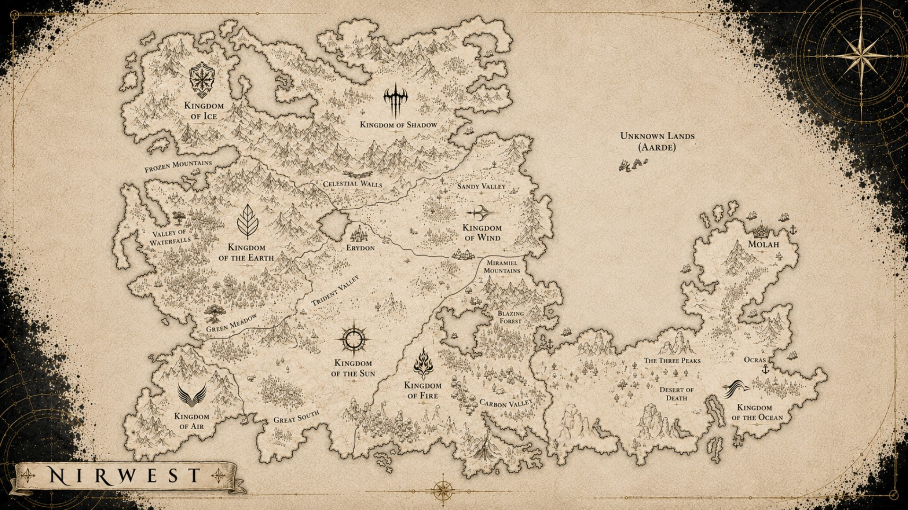
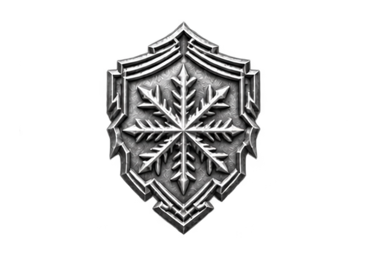
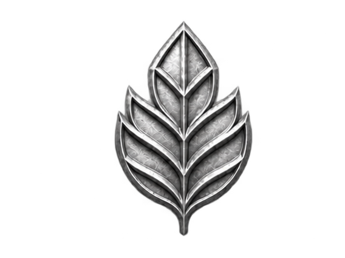
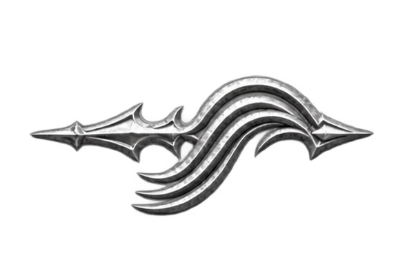
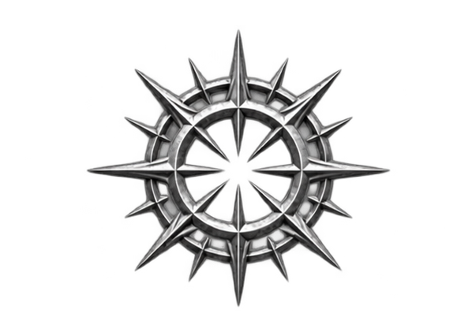
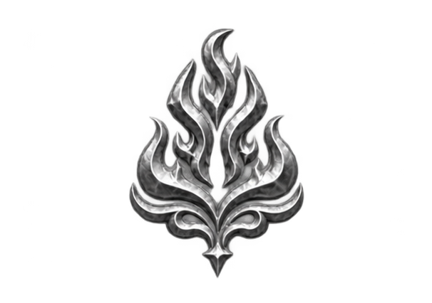
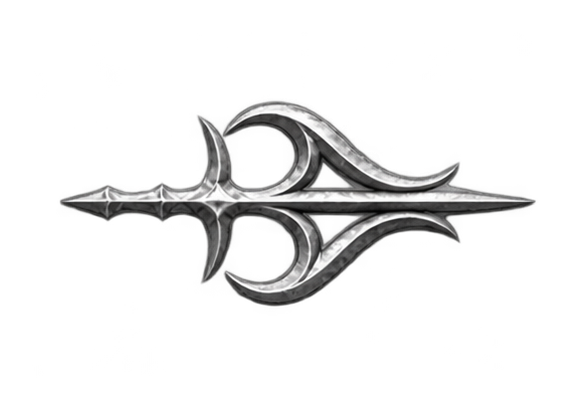
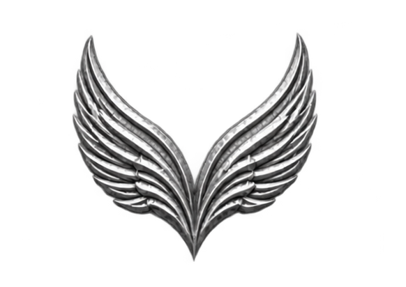
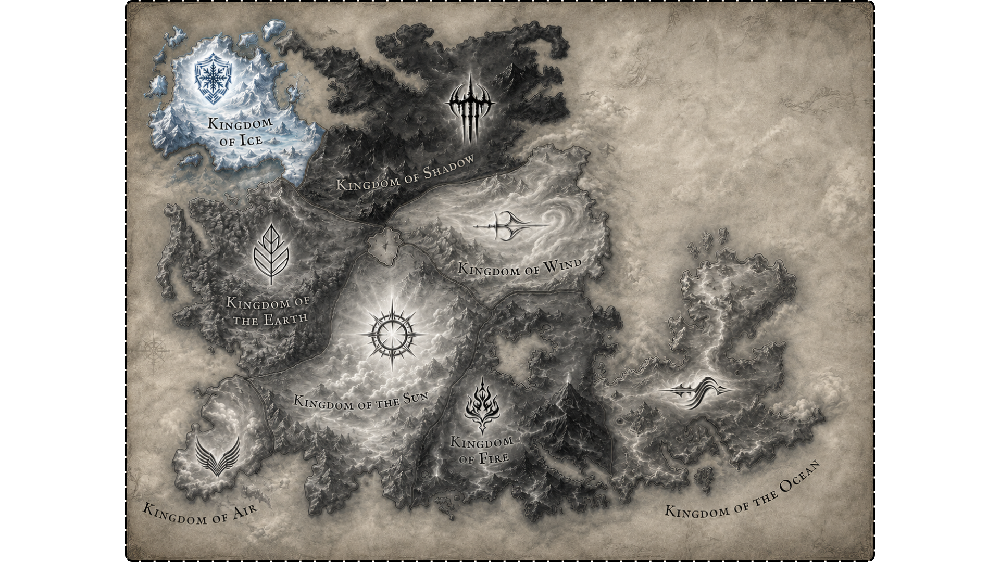
The frozen northern kingdom of Nirwest rises among immense mountain chains and lands shaped by snow, silence and endurance.
Here the climate has forged both the landscape and those who inhabit it.
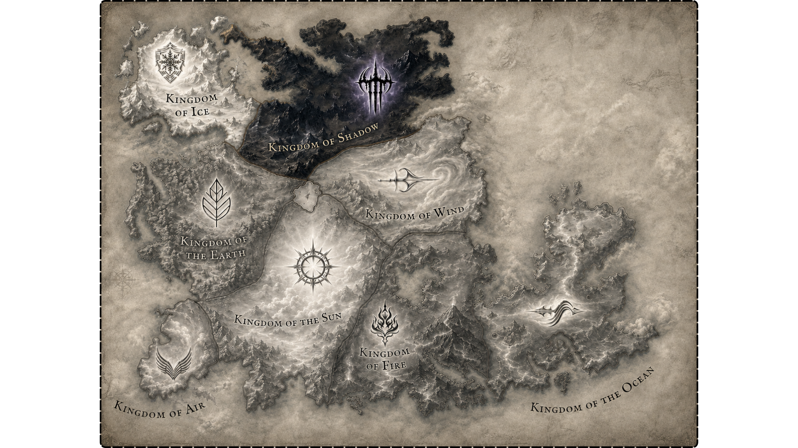
Beyond the northern mountain ranges lies one of the most mysterious regions of Nirwest.
The Kingdom of Shadow is marked by secrecy, isolation and forces hidden from much of the world.
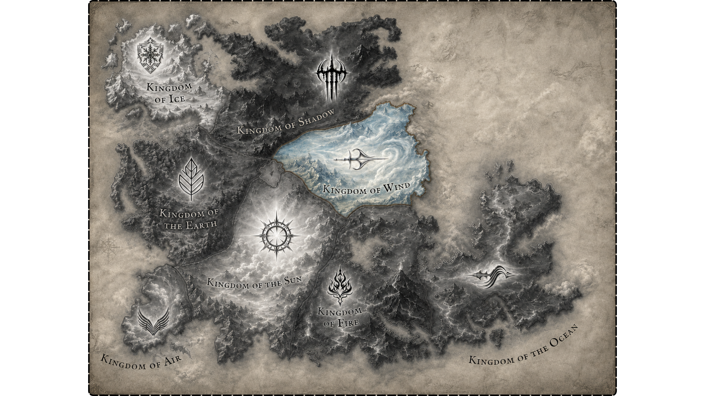
The eastern valleys of Nirwest open toward vast skies, mountain passes and constantly changing winds.
The Kingdom of Wind is a land shaped by movement, distance and the freedom of the open horizon.
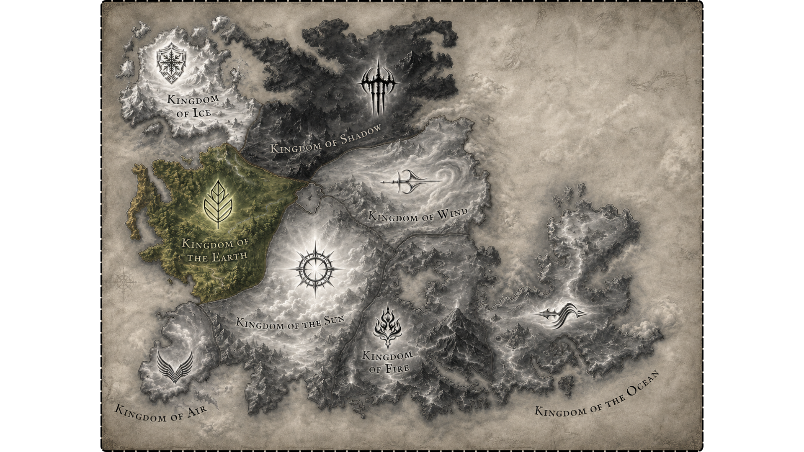
Forests, rivers and fertile valleys dominate the western territories of this ancient kingdom.
The Kingdom of the Earth is deeply connected to nature, stability and the oldest roots of Nirwest.
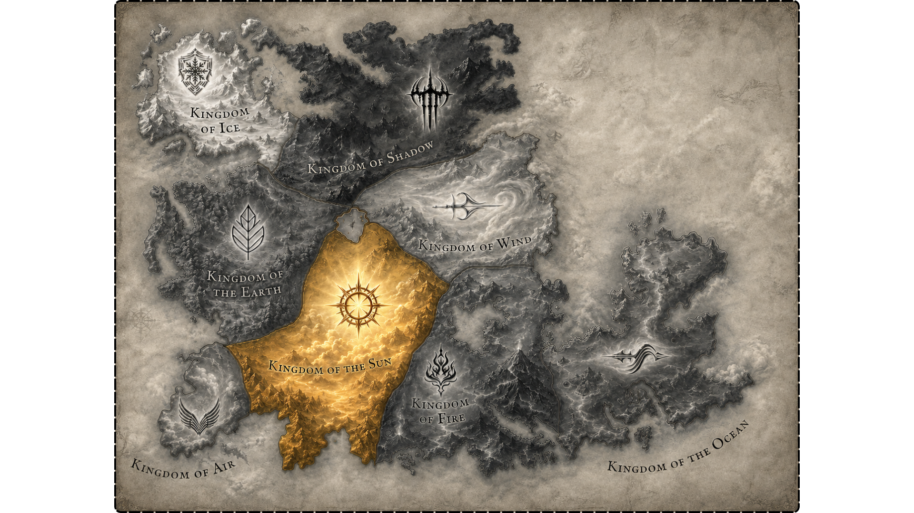
Located near the heart of Nirwest, the Kingdom of the Sun occupies a central position among the great realms.
Its lands evoke light, order and balance between the surrounding kingdoms.
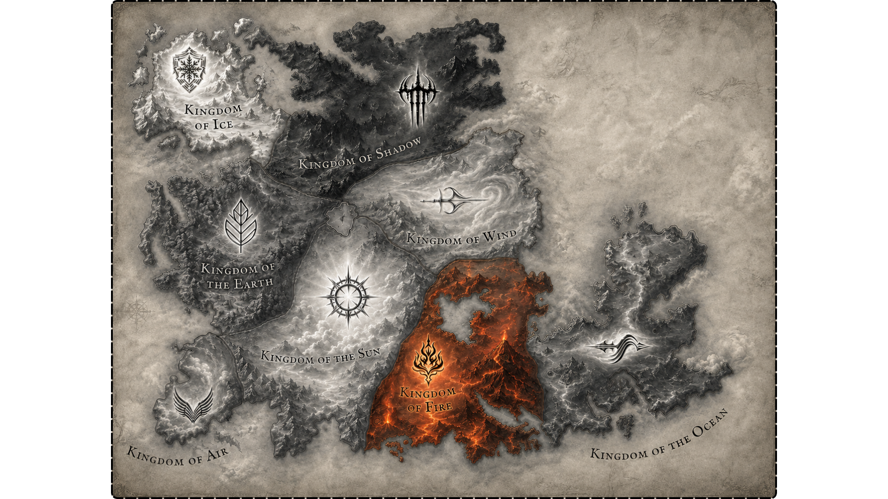
A realm associated with flame, destruction and transformation, the Kingdom of Fire occupies the southeastern lands.
Its landscape is surrounded by dangerous forests, valleys and regions shaped by extreme forces.
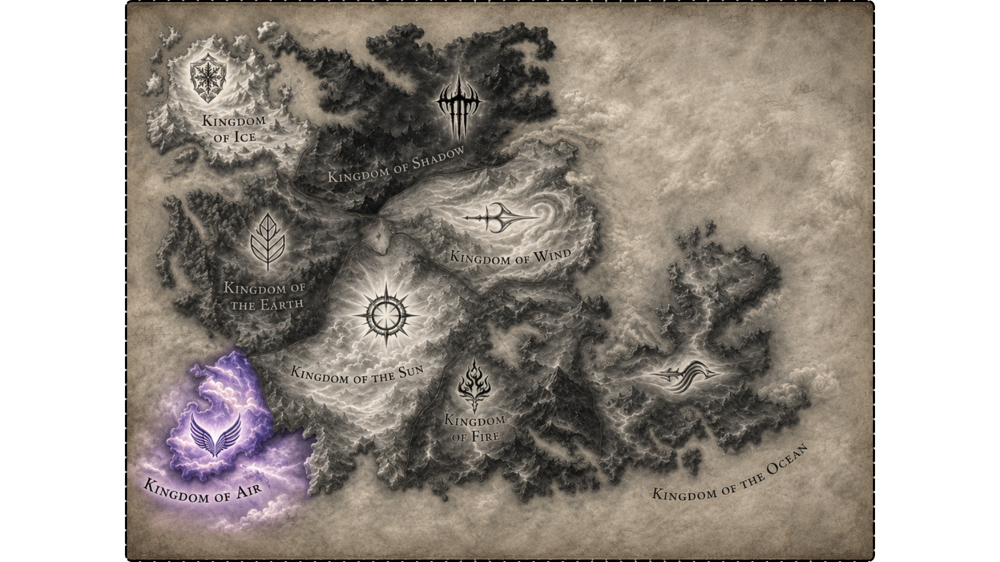
Along the southwestern edge of Nirwest lies a realm connected to open spaces, movement and elevation.
The Kingdom of Air stands apart from the central lands, facing the outer borders of the known world.
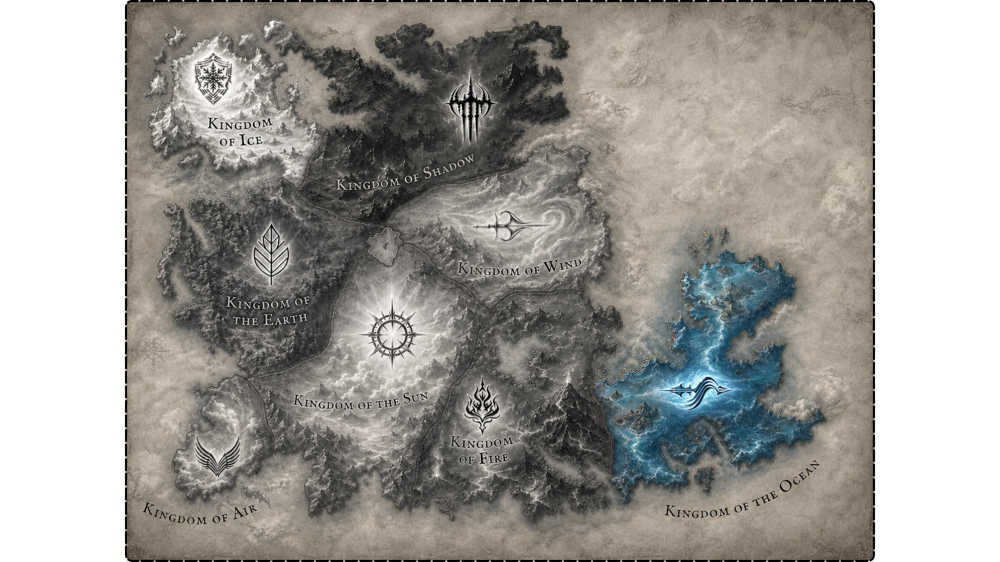
Across the eastern sea lies the Kingdom of the Ocean, separated from the western kingdoms by vast waters.
Its territory is tied to maritime routes, distant islands and horizons that lead toward the unknown.